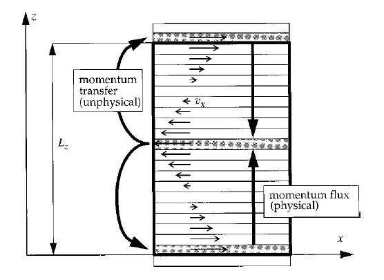

RNEMD¶
A nonequilibrium method for calculating the shear viscosity is presented. It reverses the cause-and-effect picture customarily used in nonequilibrium molecular dynamics: the effect, the momentum flux or stress, is imposed, whereas the cause, the velocity gradient or shear rate, is obtained from the simulation. Reference: F. Müller-Plathe, Phys. Rev. E 59, 4894, 1999.
{kind=link}
- class RNEMD(all_info, np_per_swap, nslabs, filename)¶
The constructor of a RNEMD object to implement a shear field.
- Parameters:
all_info (AllInfo) – The system information.
np_per_swap – The number of particles selected for velocity swap.
nslabs – The number of divided slabs of simulation box.
- Filename:
The name of file for data output including velocity profile, momentum plus and viscosity.
- setSwapPeriod(unsigned int swap_period)¶
specifies the period of particle velocity swap.
- setProfVelPeriod(unsigned int profvel_period)¶
specifies the period of profiling velocity of slabs, the default value is 10.
- setSwapGroup(ParticleSet group)¶
specifies the group of particles for velocity swap.
- setVelProfile(bool vel_profile)¶
True or False for profiling velocity of slabs.
- setPeriod(unsigned int period)¶
specifies the period of data output in which the velocity profile and momentum plus will be averaged.
Example:
rnemd = gala.RNEMD(all_info, 1, 30, 'velocity_profile.data') rnemd.setSwapPeriod(50) rnemd.setSwapGroup(group) rnemd.setVelProfile(True) rnemd.setPeriod(10000) app.add(rnemd)